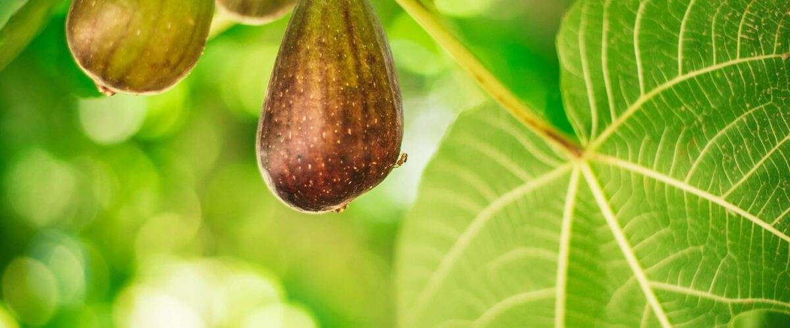

When to plant fig trees in Aberdeen and Hoquiam, WA
Plant fig trees in Aberdeen and Hoquiam Apr 1 – May 27.
- Difficulty
- Moderate
- Sun
- Full sun; against a warm south or west wall
- Spacing
- 10 to 15 feet apart
- Planting depth
- Same depth as in the pot, or a little deeper
- Frost
- Hardy to about 10 to 15°F once established; young trees need protection
- First harvest
- Often a few figs in the first two years
Why these dates
Aberdeen and Hoquiam's typical last spring frost is March 30. On the coast, the soil is usually ready for fig trees around April 1.
Coast. Mild winters but cool, foggy summers. Frost is rarely the problem; warmth is. Pick early, cool-tolerant varieties of tomatoes and squash.
How to grow fig trees in Aberdeen and Hoquiam
- Pick a sunny spot with soil that drains well, and mix in an inch or two of compost.
- Plant fig trees Apr 1 – May 27, 10 to 15 feet apart. Same depth as in the pot, or a little deeper.
- Water deeply through the first summer. Mulch the base heavily in fall, and wrap young trees in frost cloth when temperatures drop toward the teens.
- Harvest: Figs don't ripen after picking. Wait until they droop on the stem, feel soft and the skin starts to crack slightly.
Key numbers
- 10–15°F, establishedCold hardiness
- Not neededPollination
- South or west wallBest spot
- Breba, early summerReliable crop (west)
Growing notes
What makes the difference in Northwest gardens, in plain language.
Two crops a year, and why it matters here
Many figs make two crops. The breba crop forms on last year's wood and ripens in early to mid summer. The main crop forms on this year's new growth and ripens in late summer and fall. In cool west-side summers, the main crop often runs out of warmth before it finishes, so varieties that set a good breba crop, like Desert King, are the most dependable choice.
Lattarula, Brown Turkey and Chicago Hardy can ripen a main crop in warm spots or in warmer years. Common figs like these set fruit without pollination, so one tree is plenty.
Planting and winter protection
Plant figs where they'll get the most heat: against a south or west wall, a fence or pavement that holds warmth. They aren't fussy about soil as long as it drains. Water deeply through the first summer, then occasionally in dry spells.
Young trees are the most vulnerable to hard freezes. Mulch the base well in fall and wrap the tree in frost cloth when temperatures head toward the teens. Even if the top dies, figs usually regrow from the roots, though you'll lose a year or two of fruit. In cold eastern areas, grow figs in large pots and move them into an unheated garage for winter.
Pruning and harvest
Figs need little pruning. Remove dead and crossing wood in late winter once the worst cold is past. Avoid cutting back every branch, since the breba crop grows on last year's wood and heavy pruning removes it.
Pick figs when they droop on the stem, feel soft and the skin starts to crack slightly. An unripe fig will not ripen on the counter. Birds and wasps find ripe figs quickly, so check daily during harvest.
Common questions
When is the last frost in Aberdeen and Hoquiam, WA?
Typically March 30. In 9 years out of 10, frost is over by April 25. These are 1991–2020 NOAA climate normals for Hoquiam Bowerman Airport.
Is it too late to plant fig trees in Aberdeen and Hoquiam?
The spring planting window runs through May 27. Potted plants can still go in later if you water them faithfully through their first summer. Fall planting also works well here.
How long until I can pick fig trees?
Often a few figs in the first two years. Figs don't ripen after picking. Wait until they droop on the stem, feel soft and the skin starts to crack slightly.
Can figs grow in Seattle or Portland?
Yes. Figs do well west of the Cascades when planted in a warm, sunny spot. Choose a variety with a reliable early crop like Desert King, and protect young trees in hard freezes.
Why do my figs fall off before they ripen?
Small green figs that form in late summer are main-crop figs that run out of heat in a cool fall. They drop or stay hard over winter. This is normal west of the Cascades; the breba crop the next summer is the one to count on.
Do figs need a pollinator?
No. The common figs sold for home gardens set fruit without pollination, so a single tree will bear on its own.
Also plant in Aberdeen and Hoquiam around the same time
Planting dates for fig trees in nearby areas
- Forks, WA Apr 1 – May 27
- Port Angeles, WA Mar 15 – May 10
- Sequim, WA Mar 24 – May 19
- Port Townsend, WA Mar 15 – May 10
- Long Beach and Ilwaco, WA Apr 1 – May 27
- Astoria, OR Apr 1 – May 27
Full planting calendar for Aberdeen and Hoquiam · Fig trees in every city